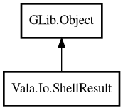

ShellResult
Object Hierarchy:

Description:
public class ShellResult : Object
Result of shell command execution.
Content:
Methods:
- public int64 durationMillis ()
Returns command duration in milliseconds.
- public int exitCode ()
Returns process exit code.
- public bool isSuccess ()
Returns true when exit code is zero.
- public string stderr ()
Returns captured standard error.
- public List<string> stderrLines ()
Returns stderr split into non-empty lines.
- public string stdout ()
Returns captured standard output.
- public List<string> stdoutLines ()
Returns stdout split into non-empty lines.
Inherited Members:
All known members inherited from class GLib.Object
- @get
- @new
- @ref
- @set
- add_toggle_ref
- add_weak_pointer
- bind_property
- connect
- constructed
- disconnect
- dispose
- dup_data
- dup_qdata
- force_floating
- freeze_notify
- get_class
- get_data
- get_property
- get_qdata
- get_type
- getv
- interface_find_property
- interface_install_property
- interface_list_properties
- is_floating
- new_valist
- new_with_properties
- newv
- notify
- notify_property
- ref_count
- ref_sink
- remove_toggle_ref
- remove_weak_pointer
- replace_data
- replace_qdata
- set_data
- set_data_full
- set_property
- set_qdata
- set_qdata_full
- set_valist
- setv
- steal_data
- steal_qdata
- thaw_notify
- unref
- watch_closure
- weak_ref
- weak_unref